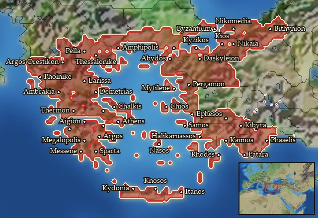

RTR: Imperium Surrectum
RTR: Imperium SurrectumRIS wiki › RIS Light › mercenaries
Aegean
Main campaignRIS Light
← all mercenary pools · wiki index
Mercenary pool: 4 units for hire in 44 regions.

Mercenaries
| Unit | Cost (dn) | Experience | At start | Most in pool | Added per turn | Who can hire | |
|---|---|---|---|---|---|---|---|
| Mercenary Hoplites | 3,885 | 0 | 1 | 2 | 0.221–0.442 | Any faction | |
| Mercenary Thureophoroi | 4,016 | 0 | 1 | 2 | 0.214–0.428 | Any faction | |
| Mercenary Greek Peltasts | 3,303 | 0 | 1 | 2 | 0.26–0.52 | Any faction | |
| Mercenary Cretan Archers | 3,532 | 2 | 0 | 1 | 0.122–0.243 | Any faction |
Regions (44)
Achaia · Aitolia · Ambrakikos Kolpos · Argolis · Arkadia · Arktonnesos · Attike · Bithynia · Boiotia · Bosporos · Chaonia · Chios · Edonis · Elis · Emathia · Euboia · Ionia · Itania · Kaikia · Kalbia · Kardia · Karia · Kianos Kolpos · Kibyratis · Korinthia · Kydoniatis · Kyklades · Lakonia · Lesbos · Lykia · Magnesia · Maiandros · Messenia · Minoa · Mygdonia · Mysia · Notia Bithynia · Orestis · Phaselia · Propontis · Rhodos · Salone · Samos · Thessalia